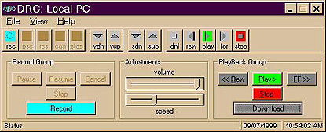
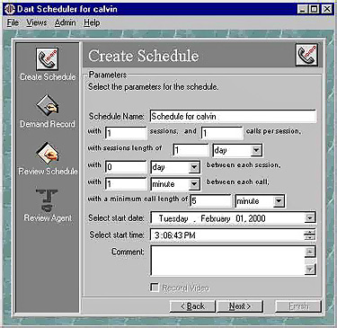

June 1997 - July 2001 - TantaComm Systems, Omaha, Nebraska,Software Engineer.
Experience
- Designed, developed, managed, programmed, tested and maintained a User Interfaces
-
DartRC, used to control the recording and playback of a client-server voice recording system,
- DartAV used to playback recorded calls and associated video,
- DartSched, used to schedule voice recordings,
- DartAV to playback the recorded calls,
- DartAM, used to archive and retrieve the audio files.
- The User Interfaces were programmed and connected via TCP/IP using Winsock, FTP,IP*works, as well as writing several active x controls used by other companies, utilizing a Lunix
server being used to record and store the audio files.
- Developed an Intranet application for in house defect tracking.
DARTRC

DARTSCHED

Skills
- OOA, OOD, OOP,
- C,
- Visual Basic, Visual Studio, Visual C++,
- MFC,
- COM, DCOM,
- ADO, RDO,
- ASP,
- SQL,
- Active-x,Active-x DLL, Active-x EXE,
- OCX,
- IP*Works,
- COMCache explorer,
- Internet Explorer, NetScape,
- Outlook Express,
- IIS, HTMl, XML, VBScript,
- MS Access 97, Ms Access 2000,
- SQLServer 6.5, SQLServer 7.0, SQLServer 2000,
- MS OFFice 95, MS Office 97, MS Office 2000,
- Ewrin ERP,
- Funk Proxy Gateway,
- Rational SQA testing suite, Rational UML,
- Windows, 95, Windows 98, Windows NT, Windows 2000,
- Linux,
- HP PC,
- HP Servers